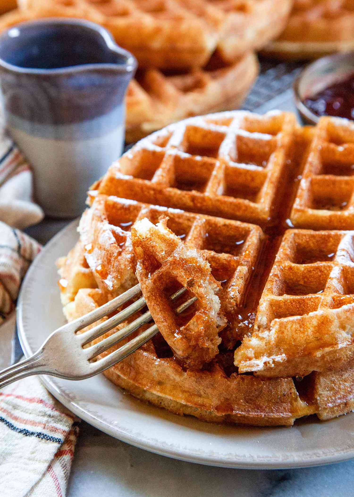

box mix belgian waffles

how to make fresh, fluffy belgian waffles with a waffle iron.
ingredients for one waffle:
- 1 cup pearl milling company buttermilk complete pancake mix
- 1/2 cup milk
- butter
- powdered sugar
steps:
-
turn on waffle iron and grease both sides with butter or non-stick
spray.
-
add the pancake mix to a bowl and add in milk incrementally until the
batter is slightly runny.
-
when the waffle iron is heated, add the mix and let cook until golden
brown.
- top the waffle with butter and powdered sugar and enjoy!